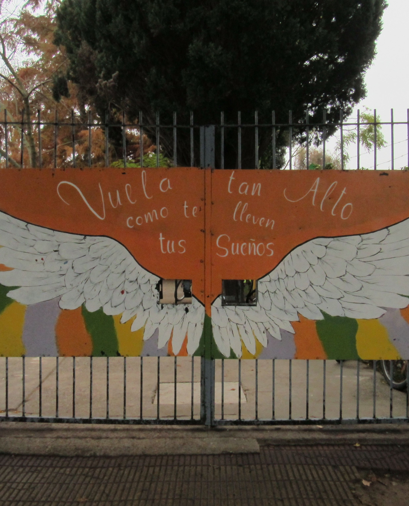

EES8 Felix Paladino.
Historia
El día 24 de noviembre de 2006 se crea la E.S.B. Nº 8 proveniente del 3º ciclo de la E.G.B. Nº 3 con una matrícula total (en ese momento), de 89 alumnos divididos en 5 secciones en dos turnos. La Escuela Secundaria Nº 8 se encuentra ubicada en calle Malvinas Argentinas y Guevara sobre colectora Norte , en la periferia de nuestro distrito, comparte el edificio con la Escuela Primaria Nº 3 de donde proviene la matrícula, como así también de la E.P. Nº 2. Pertenecen a un nivel socioeconómico medio-bajo, bajo, sin trabajo estable, con un nivel de instrucción primaria incompleto y muy vulnerables a problemáticas sociales. En el año 2010 se incorporó el 4 año de secundaria superior con orientación ARTE-MÚSICA, en el 2011 5° año y en el 2012 egresa la primera promoción, quedando conformada con tres secciones de ciclo básico y tres secciones del ciclo superior. El personal del establecimiento se compone por una Directora, una secretaria, dos preceptoras, un EMATP de informática y 51 profesores en los distintos espacios curriculares. Leer mas...
Mision

Formar alumnos y alumnas en su integridad psico-socioeducativo, en una educación tendiente a fortalecer su desarrollo personal, con una enseñanza humanística- científica y un enfoque curricular y transversal en el arte y la música, preparándose hacia una educación superior y /o hacia el mundo de la música y el arte en el cual pueden desarrollar su proyecto de vida”.
Vision
Soñamos con construir una escuela de calidad en donde nuestros estudiantes puedan desarrollar su proyecto de vida e incorporar estrategias que le permitan pensar y sentir su realidad y su entorno. Construimos una Comunidad Educativa que se vincula con los estudiantes, las familias y comunidad, desarrollando, promoviendo y manteniendo el respeto a las personas y su diversidad, potenciando el desarrollo humano a través del estudio y práctica de la música y el arte.
Objetivos

- Robustecer la enseñanza a los estudiantes
- Acompañar a los alumnos en su trayectoria educativa para cumplir con la educación obligatoria
- Construir un ambiente adecuado de aprendizaje en el cual cada persona sea respetada como ser único.
- Trabajar en un ambiente de aprendizaje, estimulante y creativo.
- Ofrecer a los estudiantes la oportunidad de aprender y desarrollar su talento artístico y musical a su más alto nivel.

"En la Secundaria 8 siempre hay ambiente colaborativo. Se trabaja continuamente en mejorar colectivamente. ¡me encanta!"

"En la Secundaria 8 trabajamos desde una educación integral con creatividad, trabajo en equipo, respeto por la diversidad."

"En la Secundaria 8 la educación transforma vidas: calidad y ambiente estimulante, ¡orgullosos de nuestros/as estudiantes!"